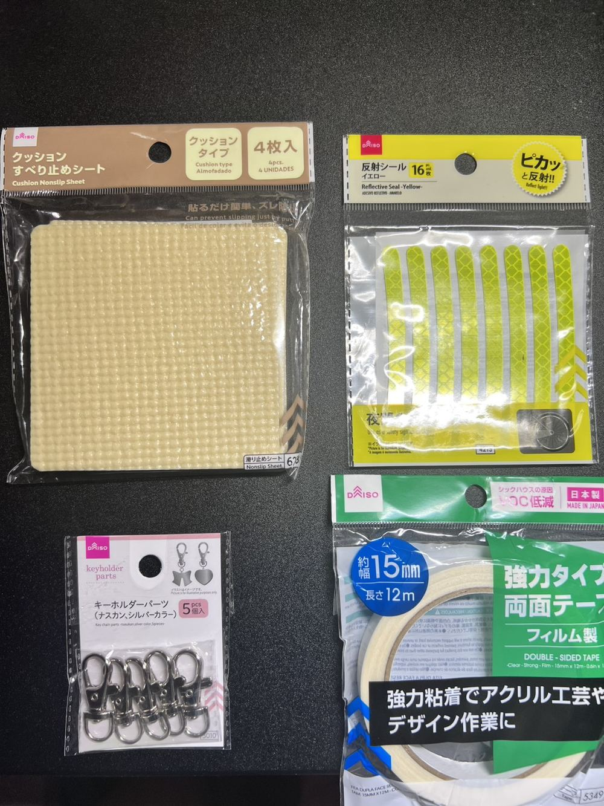
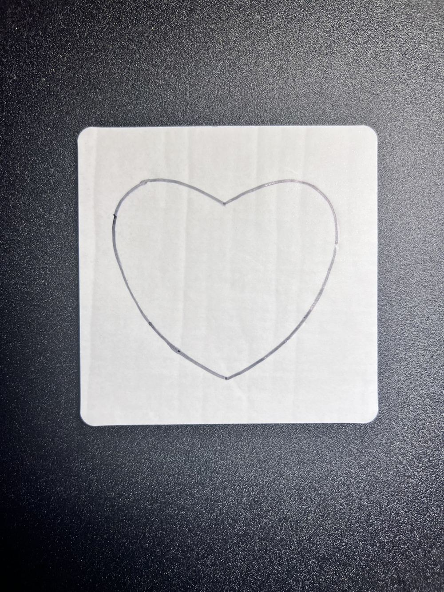
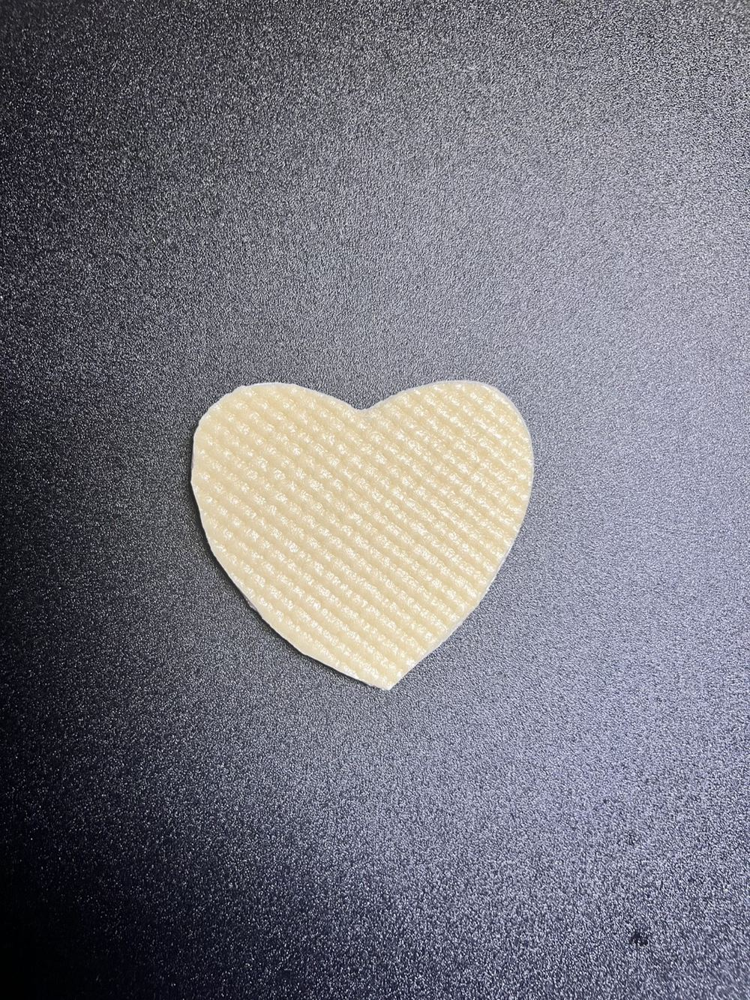
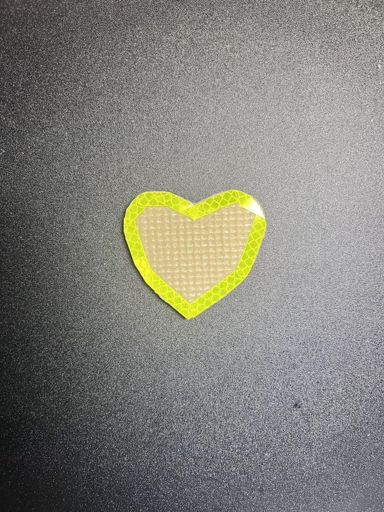
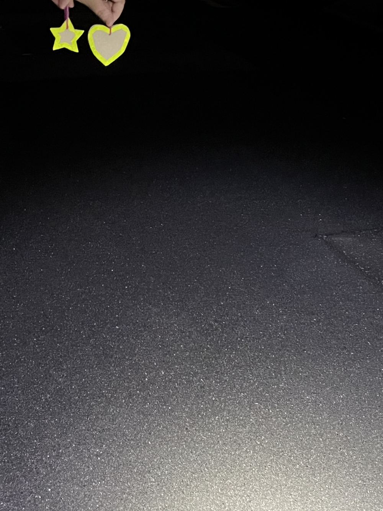

子どもも、高齢者も、
まちごと見守る虹になる。
レインボーの会は、登下校の見守りから特殊詐欺被害防止まで、警察・学校・学生と手を取り合いながら地域の安全・安心を支えるボランティアサークルです。
レインボーの会について
ひとつの色ではなく、いくつもの色が重なり合って、まちの安全を支えています。
レインボーの会は平成17年（2005年）4月1日に設立された、香川県さぬき市を拠点とするボランティアサークルです。会の名前には、子ども・高齢者・学生・警察など、立場の異なる人々が色とりどりの帯のようにつながり、地域を見守るという願いが込められています。
設立以来、志度小学校をはじめとする児童の登下校時の見守り活動を中心に、特殊詐欺被害防止の啓発キャンペーン、年末年始の特別警戒パトロール、地域のお祭りでの防犯ブース運営など、香川県・香川県警察や近隣大学と連携しながら幅広い防犯活動に取り組んできました。
令和2年度には香川県防犯活動自主企画提案事業として「地域との交流と協同による防犯活動」を実施するなど、行政と協働した取り組みも継続的に行っています。
活動カテゴリー
安全・安価な防犯反射板の取り組み
薄暗い時間帯の登下校や外出時に、光る「反射板」でひと目を守る新しい活動です。
日没が早まる季節、車のライトに反射して存在を知らせる「反射板」は、子どもも高齢者も夜道での事故や不審者との遭遇を防ぐ、身近で確実な備えのひとつです。レインボーの会では、材料費を抑えながら誰でも安全に作れるよう、100円ショップで手に入るEVAマットを使った手作りワークショップを新たにスタートしました。
特別な工具を使わず、はさみとカッターだけで加工できるため、小さなお子さんから保護者、地域の方まで一緒に参加できるのが特長です。作った反射板はランドセルやバッグに取り付けて、そのまま日々の見守り活動にも活用できます。
EVAマットを選ぶ理由
材料リスト
- EVAマット（100円ショップ／2色以上）
- 反射シート・反射テープ（100円ショップ・手芸店）
- 両面テープ（または木工用ボンド）
- はさみ・カッター
- キリまたはパンチ（穴あけ用）
- 丸ひも・Sカン（バッグへの取り付け用）
- 型紙（星・しずく・丸などシンプルな形）
- 下敷き・カッターマット（安全な作業用）
作り方ステップ
材料をそろえる
すべて100円ショップ（ダイソー）で購入できます。クッションタイプのすべり止めシート（EVAマット素材）、反射シール、両面テープ、キーホルダーパーツを用意しました。

型紙を写す
EVAマットの上に好きな形の型紙をあて、鉛筆やペンで下書きします。星やハートなど、シンプルな形がおすすめです。

カットする
下書きに沿ってカッターやはさみで丁寧に切り抜きます。お子さんが作業する際は、保護者やスタッフが必ず付き添います。

反射材を貼る
反射シールを外周に沿って貼り、ふちどるように仕上げます。貼るだけで夜道でもしっかり目立つ反射板になります。

完成・夜道での発光検証
キリで小さな穴をあけてキーホルダーパーツを通せば、ランドセルやバッグにも取り付けられます。
完成した反射板に車のヘッドライトや強光ライト（1,000ルーメン）を照射すると、遠方からでもくっきりと強い光を反射します。登下校時の見守り活動やイベント会場で配布し、日常の安全対策として役立てます。

12月 イオンモール高松にてワークショップを実施予定
今回ご紹介した手作り防犯反射板ワークショップを、12月にイオンモール高松にて開催します。小学生を中心に、保護者の方もお子さんと一緒にご参加いただけます。詳しい日時・参加方法は決まり次第、当ページでお知らせします。
活動記録
2020年から現在まで、実施してきた主な活動を年ごとにまとめています。
「安全・安心まちづくり旬間」全国地域安全運動 パトロール出発式
見守り隊出発式
年末年始の特別警戒・交通死亡事故抑止活動出発式／街頭交通監視
年末年始特別警戒「讃岐33（燦々）作戦」犯罪防止・防犯キャンペーン
「源内警部」の防犯アイテム贈呈式
全国地域安全運動 自転車盗難被害防止キャンペーン（鍵かけキャンペーン）
さぬき警察署との児童虐待防止 啓発キャンペーン
香川県・香川県警察合同 特殊詐欺被害防止キャンペーン
特殊詐欺防止 Twitter用動画 制作
防犯（特殊詐欺Twitter用）動画制作に対する感謝状贈呈式
研修・贈呈式高松秋のまつり 仏生山大名行列 ブース開設
- 特殊詐欺被害防止メッセージ入りカード作り（子どもを撮影した写真を使い、祖父母へのメッセージカードを作成。希望者は子ども用制服を着用して撮影可）
- 防犯ガラス割り体験（通常のガラスと防犯ガラスを実際に割って比較）
- インターネット安全利用に関するクイズ
香川県・香川県警察合同 特殊詐欺被害防止キャンペーン（徳島文理ヤンボラ）
特殊詐欺被害防止香川県・香川県警察合同 特殊詐欺被害防止キャンペーン（徳島文理ヤンボラ）
特殊詐欺被害防止香川県・香川県警察合同 特殊詐欺被害防止キャンペーン（徳島文理ヤンボラ）
特殊詐欺被害防止学生防犯ボランティア育成・研修会
研修・贈呈式改正風適法施行に伴う犯罪抑止に向けた繁華街パトロール
見守り・パトロールJR高松駅における テロ対策キャンペーン
見守り・パトロール徳島文理大学レインボーの会×香川大学防犯パトロール隊 防犯ボランティア共同プロジェクト出発式
見守り・パトロール徳島文理大学レインボーの会×香川大学防犯パトロール隊 共同プロジェクト活動
見守り・パトロール防犯パトロール
見守り・パトロール防犯パトロール
見守り・パトロール香川県・香川県警察合同による特殊詐欺等被害防止キャンペーン
特殊詐欺被害防止防犯パトロール
見守り・パトロール情報交流会
研修・贈呈式廣田八幡神社 清掃活動
地域交流イベント科学教室ボランティア
地域交流イベント防犯ボランティア
見守り・パトロール夏祭り協力
地域交流イベントパトロール実施
見守り・パトロール真夏の夜の夢 運営協力
地域交流イベント高松市案内クルー 参加
地域交流イベントおいでまい祭り 運営スタッフ
地域交流イベント志度祭 運営スタッフ
地域交流イベント志度祭 運営スタッフ
地域交流イベント連携団体
行政・警察・学校・大学など、多くの団体と協力しながら活動しています。
お問い合わせ
当サークルへの活動へのご参加・ご協力、取材や連携のご相談などに関するお問い合わせは、大学の公式窓口である徳島文理大学 高松駅キャンパス 学生支援課にて一括して受け付けております。
徳島文理大学 高松駅キャンパス 学生支援課（※学祭ポスターおよび公式活動に関する外部からのお問い合わせ窓口となります。）